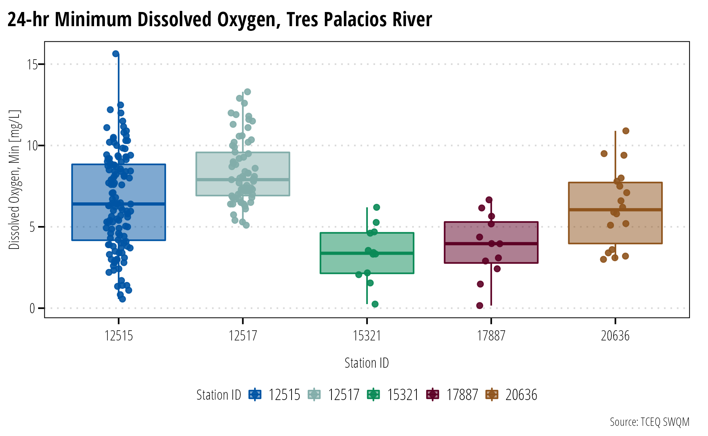
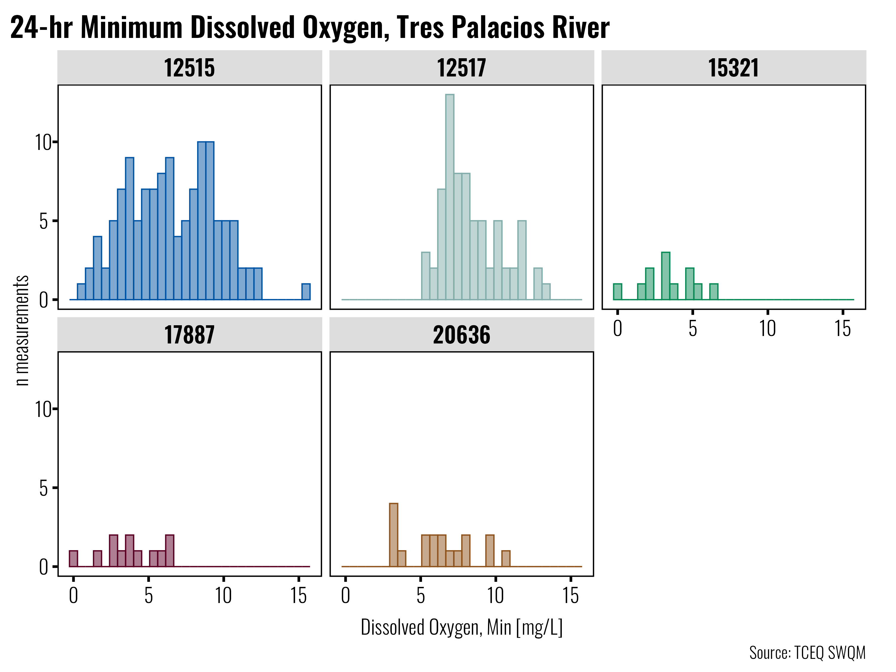
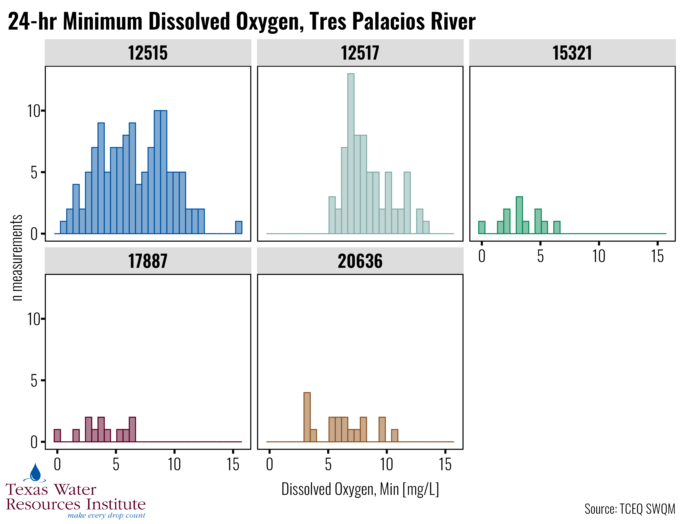

This package provides:
- Rmarkdown templates for work and pdf documents that follow recommended brand guidance
- ggplot themes for common design styles between projects
Installation
twriTemplates lives on Github, install using the remotes package:
install.packages("remotes")
remotes::install_github("TxWRI/twriTemplates")Usage
Prerequisites
The Rmarkdown templates assume the required fonts are installed on your system. The Minion Pro font among others are used by the various templates and themes. We aren’t licensed to distribute some of the fonts. Install all the fonts AgriLife provides at the Marketing and Communications branding website.
In order to use the pdf template, please install the tinytex package:
install.packages("tinytex")
tinytex::install_tinytex()
tinytex::is_tinytex()Make sure the last function returns TRUE.
Templates
Create a new Rmarkdown document, select “From Template”, and the TWRI PDF template and TWRI doc template will be available in the list.

Screenshot of rmarkdown template selector
A new .Rmd file will open with example text and guidance in the document.
Theme
ggplot themes are provided for print and powerpoint presentation. The main difference is that the fonts on the presentation styled theme are scaled larger to facilitate reading from the back row in an auditorium. There is also a function to add TWRI branding to your plots.
library(twriTemplates)
#> See https://github.com/TxWRI/twriTemplates for more details, use the Issues tab if you have questions.
library(ggplot2)
library(dplyr)
#>
#> Attaching package: 'dplyr'
#> The following objects are masked from 'package:stats':
#>
#> filter, lag
#> The following objects are masked from 'package:base':
#>
#> intersect, setdiff, setequal, union
## report theme
p1 <- Dissolved_Oxygen %>%
mutate(Station_ID = as.factor(Station_ID)) %>%
ggplot(aes(Station_ID,
Min_DO,
fill = Station_ID,
color = Station_ID)) +
geom_boxplot(alpha = 0.5) +
geom_jitter(alpha = 0.9, width = 0.1, height = 0) +
theme_TWRI_print() +
scale_color_discrete_twri(name = "Station ID") +
scale_fill_discrete_twri(name = "Station ID") +
labs(x = "Station ID",
y = "Dissolved Oxygen, Min [mg/L]",
title = "24-hr Minimum Dissolved Oxygen, Tres Palacios River",
caption = "Source: TCEQ SWQM")
p1
## presentation theme
## suggested export size is 10 inches wide by 7.5 inches tall.
p2 <- Dissolved_Oxygen %>%
mutate(Station_ID = as.factor(Station_ID)) %>%
ggplot(aes(x = Min_DO,
fill = Station_ID,
color = Station_ID)) +
geom_histogram(alpha = 0.5) +
facet_wrap(~Station_ID) +
theme_TWRI_pres() +
scale_color_discrete_twri(name = "Station ID") +
scale_fill_discrete_twri(name = "Station ID") +
labs(x = "Dissolved Oxygen, Min [mg/L]",
y = "n measurements",
title = "24-hr Minimum Dissolved Oxygen, Tres Palacios River",
caption = "Source: TCEQ SWQM") +
theme(legend.position = "none")
p2
#> `stat_bin()` using `bins = 30`. Pick better value with `binwidth`.
add_TWRI_logo(p2, scale = 0.2)
#> `stat_bin()` using `bins = 30`. Pick better value with `binwidth`.